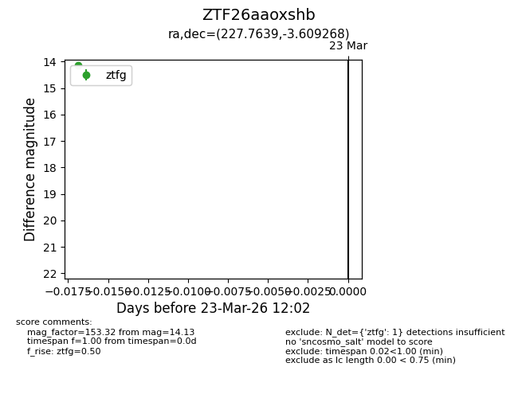
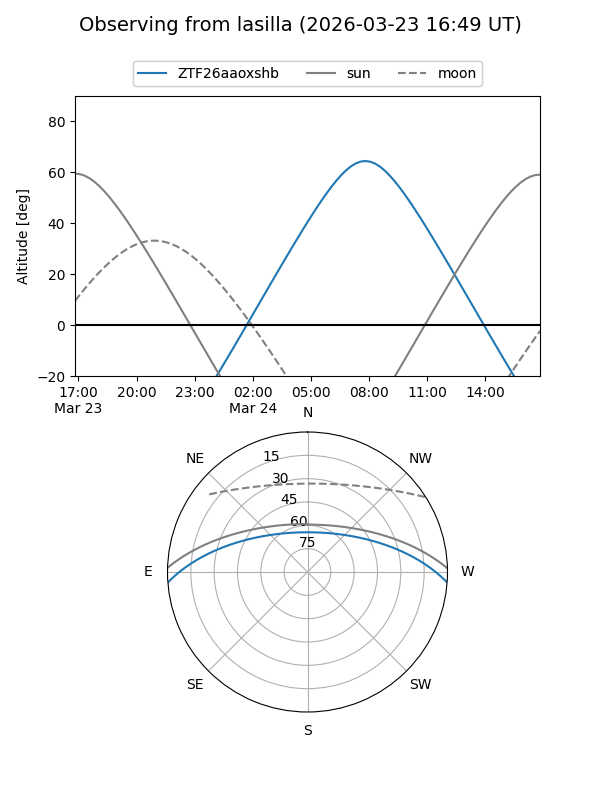
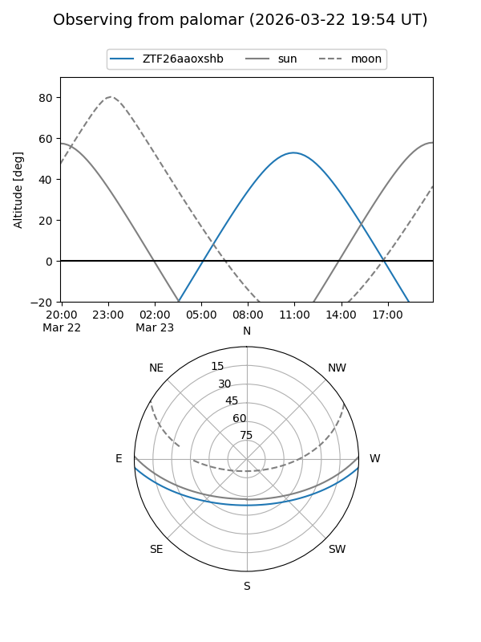

ZTF26aaoxshb
Target ZTF26aaoxshb at 2026-03-23 12:04
Aliases and brokers:
FINK: link
Lasair: link
ALeRCE: link
alt names
ZTF26aaoxshb (ztf,fink_ztf)
Coordinates:
equatorial (ra, dec) = 227.7639,-3.60927
equatorial (HMS+DMS) = 15:11:03.35,-03:36:33.37
galactic (l, b) = (356.0021,+44.40559)
Flags:
Photometry:
last ztfg=14.13
1 ztfg detections
Lightcurve

Visibility


Additional plots